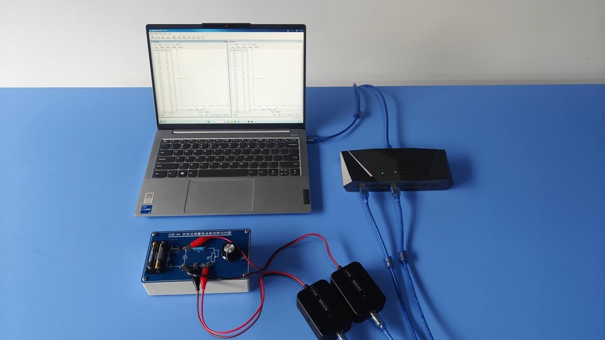
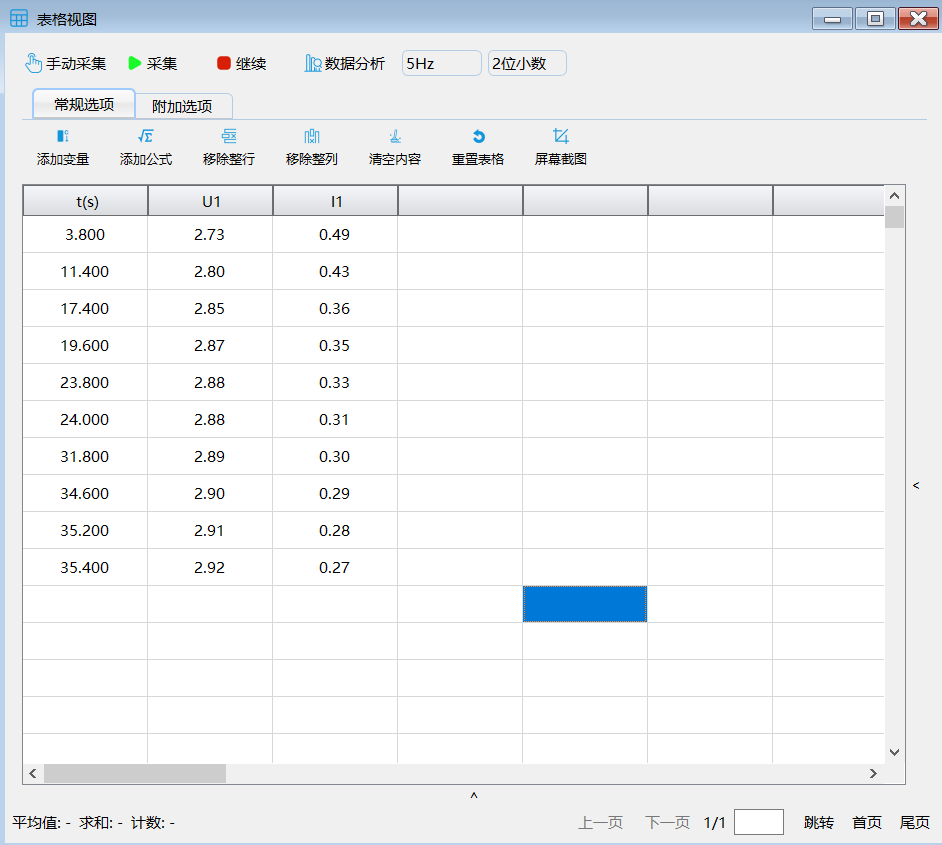
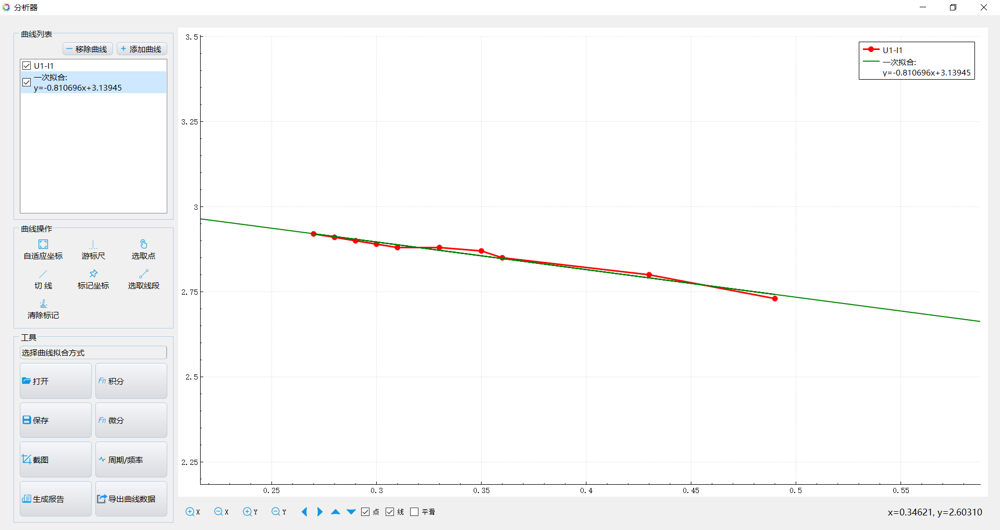
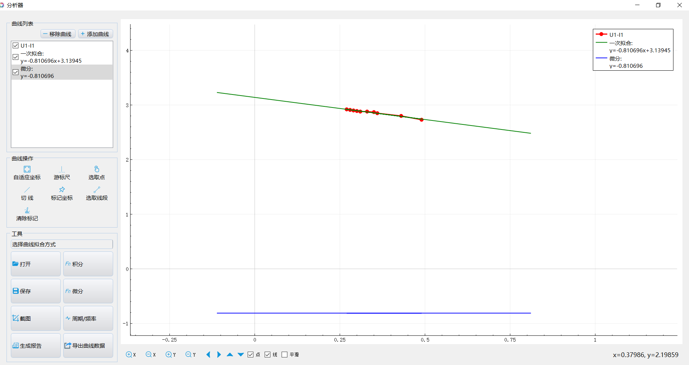

实验二十六 测电池的电动势和内阻
【实验目的】
通过实验测量电源的电动势和内阻，掌握运用图像计算电源电动势和内阻方法。
【实验原理】
电源的特性主要由电动势和内阻来描述，测量电源的电动势和内阻对于电源有着重要的意义。由全电路的欧姆定律ε=U+Ir可知：若已知一组路端电压值U和对应的总电流值I，就可以联立方程算出ε和r。而实验中通常在测出一组U、I值后根据公式ε=U+Ir的特性利用作图法求出ε和r。
【实验器材】
数据采集器、测定电源的电动势和内阻实验板、电流传感器、电压传感器、计算机等
【实验装置】

【实验操作步骤】
1.搭建好实验环境，连接好电路，断开电学实验板的开关K，将滑动变阻器调到最大值；
2.进入实验数据分析软件，连接好数据采集器和电流、电压传感器，通过传感器窗口的“调零”按钮对传感器进行调零。
3.打开“表格视图”，闭合开关K，移动滑动变阻器的触片，调节其阻值，每次调节后点击“手动采集”，将此时对应的电流和电压值记录在表格视图中；记录几组不同的电流和电压值；
4.点击“数据分析”，选择Y轴为“电压U”，X轴为“电流I”，做出电压和电流关系图像；
5.采用拟合功能中的“线性拟合”，做出实验数据点的线性拟合曲线，打开拟合曲线的表达式，便可得到ε和r的值。

实验数据

U-I曲线及拟合

对拟合线微分
【注意事项】
请勿超量程使用传感器。
【思考与讨论】
1.在路端电压U和电流I的关系图像中如何确定电源电动势和电源的内阻？
2.无内阻的电源，即r=0的电源称为理想电源，理想电源的路端电压与电源的电动势的关系如何？
【自由探究】
你能用一个电流传感器、一个电阻箱和若干导线测量待测电源的电动势和内阻吗？请自行设计一个实验方案，并动手试一试。